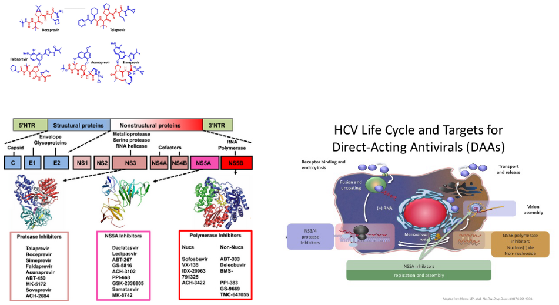

5 Antiviral Drugs
Antivirus drugs are essential tools in the fight against infectious diseases. They serve two main purposes: managing outbreaks and treating or preventing virus infections.
In the first scenario, antivirus drugs are used to manage outbreaks, especially during pandemics. Let’s take the example of the influenza virus pandemic. These drugs are administered to key individuals, such as healthcare workers, to control the spread of the virus until vaccines become available. Essentially, antivirus drugs help keep the situation under control when we’re waiting for vaccines to be ready.
In the second scenario, antivirus drugs are used to treat or prevent virus infections when vaccines are not effective or appropriate. For instance, some viruses like HIV-1 can be tricky to develop effective vaccines for, and some patients with HIV-1 are immunocompromised. In such cases, antivirus drugs are crucial in managing the infection. Additionally, there are viruses like RSV and HIV for which vaccines are not available, making antivirus drugs the primary line of defense in these situations. These drugs are a vital tool in protecting individuals from these viruses when no vaccine is at hand.
Firstly, scientists can target each step in the virus life cycle. Viruses have a specific sequence of events they follow when infecting a host, and we can develop treatments that disrupt these steps. This disrupts the virus’s ability to replicate and spread.
Secondly, there’s a complex relationship between the virus and the host organism it infects. This connection is intricate and plays a significant role in how a virus operates. By studying this relationship, researchers can find weaknesses they can exploit to combat the virus effectively.
However, there’s a challenge in developing treatments - selectivity and toxicity. While we want treatments to target the virus, we also want to avoid harming the host organism. Striking the right balance between being selective against the virus and avoiding toxicity to the host can be a tricky task.
To tackle these challenges, we need a deeper understanding of how viruses interact with their host. The more we know about these interactions, the better equipped we are to develop treatments that specifically target the virus while minimizing harm to the host. In essence, gaining greater insights into virus-host interactions is critical for improving the way we combat viral infections.
5.1 General Considerations Behind Virus Drug Development
There are some general considerations when it comes to antivirus drugs:
Firstly, each virus has its own set of specific proteins. This means that antivirus drugs need to be specifically designed to target the particular virus they’re meant to combat. They can’t be one-size-fits-all.
Secondly, some viruses can go into a latent or dormant state within the body. In these cases, antivirus drugs might not completely cure the infection, but they can help manage the symptoms and reduce the virus’s activity.
It’s also important to note that early treatment is often crucial for the effectiveness of antivirus drugs. For example, drugs like Tamiflu work best when administered early in the course of an infection.
However, there can be challenges related to the pharmaceutical industry, particularly in terms of drug development. Developing drugs, especially for diseases like Ebola, can be expensive. The potential market for these drugs might not be as large, which can deter pharmaceutical companies from investing in research and development.
Cost is a significant issue, especially in developing countries. While some antivirus drugs, like the human monoclonal antibody against RSV (Respiratory Syncytial Virus), can be highly effective, their expense makes them less accessible in regions with limited resources. So, finding ways to make these drugs more affordable is a critical concern, as everyone should have access to effective treatments regardless of their location or financial means.
5.1.1 Strategies for Antivirus Drugs
Note that all three strategies shown here can all be used with one another.
5.1.1.1 Testing Specific Drugs
Firstly, scientists test specific drugs to see if they can stop or inhibit the replication of a virus. For instance, a drug like amantadine may be examined for its antiviral properties.
It’s worth noting that the discovery of these antiviral activities is often serendipitous, meaning that researchers sometimes stumble upon these properties while studying a drug for another purpose.
Once a drug shows promise, further evaluation is necessary. This involves understanding the mechanism of action, which is how the drug works against the virus. This knowledge is crucial for optimizing its effectiveness.
A significant concern in the development and use of antivirus drugs is the potential for drug resistance to develop. Viruses can adapt and become less susceptible to the effects of a drug, reducing its efficacy over time. This is an ongoing challenge in the field of antiviral drug development.
Finally, there’s the concept of drug repurposing. This means taking existing drugs that were originally designed for a different purpose and discovering that they have antiviral properties. This approach can save time and resources compared to developing entirely new drugs from scratch.
5.1.1.2 Rational Approaches
In the world of antiviral drug development, there are two main approaches: the rational approach and the cell-based approach. Let’s break down what these mean.
The rational approach is like a detective work where scientists search for clues to create drugs that can fight viruses. They use a method called high-throughput screening to identify specific parts of the virus that they can target. Imagine it like finding the weak spots of a villain. In this case, they look for a viral gene product, which is a tiny piece of the virus. To create a drug, they often need to purify a protein or a group of proteins. These drugs work by blocking the bad things the virus proteins do. They even have fancy machines, like robots, to help them quickly test lots of drugs. For example, they found drugs like nevirapine to fight HIV1.
On the other hand, the cell-based approach is a bit different. It’s like a big experiment where scientists use whole cells to test drugs. This approach is usually slower and can be a bit tricky and costly. However, it lets scientists explore many different parts of the virus at once. They even have special machines that can do this, like robotic systems with viruses that light up, sort of like a virus disco. With this approach, they found drugs like PA-457 to fight HIV by stopping the virus from growing up.
5.1.1.3 Structure-Based Approaches
In the world of creating antivirus drugs, there’s a cool approach called the structure-based approach. It’s like having a superpower that lets scientists see the virus in 3D, just like in a video game. Let’s break down what that means.
With this approach, scientists can figure out the three-dimensional (3D) shape of the virus’s proteins. It’s kind of like having a detailed map of the virus. This map allows scientists to zoom in and see the tiny, important parts of the virus proteins super up close, like using a microscope that shows things at the atomic level.
Now, with this powerful 3D map, scientists can understand how the virus works on a biochemical level. It’s like knowing the secret moves of a video game character. They can use this knowledge to design medicines that can stop the virus in its tracks. One example is a medicine called Zanamivir, which fights the flu virus by targeting a part of the virus called neuraminidase.
So, the structure-based approach is like having a superhero vision that lets scientists see the virus in 3D. This helps them design smart medicines that can defeat the virus, just like a hero taking down a villain in a video game.
5.1.2 Developing Hits
In the quest to find antiviral drugs, scientists use different methods to discover a promising candidate, which they call a hit. These “hits” are substances that show some level of effectiveness in fighting a virus. However, just finding a “hit” isn’t enough. Scientists need to turn this “hit” into a powerful drug with high potency and qualities that make it safe and easy to use, like taking it as a pill or making sure it doesn’t have harmful effects in the body.
The properties of an antiviral drug can influence how it’s used in patients. For example, think of medicines like Tamiflu, which you can take as a pill, or Zanamivir, which comes as an aerosol spray, or Peramivir, which is given through an IV. These differences matter because they affect how patients receive the treatment.
Other important things to consider are the market and patents. The availability of a drug, along with its patents (like exclusive rights to make and sell it), can impact its use and availability.
Once a “hit” is found and turned into a good drug with the right qualities, it’s ready for clinical trials. These are like big tests to see if the drug works well and is safe for patients. But there’s always a concern about the drug’s toxicity, meaning how harmful it might be. Many antiviral drugs can have side effects, which are like unwanted consequences. Scientists need to find a balance between the benefits of the drug and any costs, like the nausea that amantadine can cause versus the protection it offers against H5N1 infection.
5.2 Drug Actions
5.2.1 Virus Attachment and Entry
Drugs can help target viruses’ entries into the cell (to cause an infection). This is a mechanism that is targeted by many treatments (e.g., Zanamivir).
5.2.1.1 Fusion Inhibitors
Let’s dive into the fascinating world of fusion inhibitors, with a specific example called Enfurirtide, or T20 for short. These inhibitors are like the bouncers at the door of a club, stopping viruses from getting in.
Scientists discovered fusion inhibitors, like T20, when they were testing tiny pieces called peptides to see if they could stop the HIV1 virus from infecting cells in a lab dish.
Here’s the trick: when HIV1 tries to sneak into a cell, it has to bind with something called gp120, like a key fitting into a lock. This connection sets off a change in shape, a bit like a transformer turning into a different form. This change lets two parts, HR1 and HR2, start interacting. It’s this interaction that helps the virus fuse with the cell’s membrane.
Now, T20 comes in and plays the hero. It binds to HR1 on a different part called gp41 and says, “No way, you’re not coming in!” By blocking this interaction between HR1 and HR2, T20 prevents the virus from joining forces with the cell. Essentially, it stops the virus from fusing with the cell’s outer covering, like a locked door.
5.2.1.2 Cell Surface Receptors
Let’s talk about CCR5 and its role in HIV1 infection. CCR5 is like a key that the HIV1 virus needs to enter some types of human cells. Maraviroc is a kind of drug that prohibits HIV1 from getting into a cell by binding to the CCR5 primary receptor (though the virus can also get in using the CXCR4 receptor - this drug needs to be checked for its effectiveness).
Scientists figured out that CCR5 is crucial for the virus to get a foothold in the body. They used animal models, which are sort of like test subjects in the lab, to show that CCR5 is essential for the virus to start an infection.
But guess what? Scientists found a way to block CCR5 and stop the virus in its tracks. They used something natural called RANTES, which is like a superhero protein that can lock CCR5 and keep it from letting HIV1 in. This is a bit like changing the lock on a door so that the old key doesn’t work.
There are other things like TAK-779 that also block CCR5 by preventing RANTES from binding to it. They’re like additional locks on the door.
And then there’s PRO 140, which is like a special antibody created to fight against CCR5. The great thing about PRO 140 is that it doesn’t lead to multi-drug resistance (which is when the virus gets smarter and figures out how to get in) or direct toxic effects in the body. It’s a friendly defender against the virus.
5.2.2 Uncoating
Let’s explore what happens after a virus attaches to and enters a cell. After this sneak attack, some viruses need to uncoat themselves to release their genetic material, which is like the virus’s secret code. This uncoating step is crucial for the virus to take control of the cell.
But, here’s where our heroes, drugs like Amantadine and Rimantadine (Symmetrel and Flumadine, respectively), come into play. These drugs are like the bouncers at a club, preventing the virus from getting into the party.
Amantadine and Rimantadine target a specific part called the M2 ion channel. Think of it like the virus’s entry gate. The M2 protein is responsible for forming a tiny channel that’s picky about the protons (charged particles) it lets in.
Now, here’s the clever part: Amantadine binds to certain sequences within the M2 protein’s channel, specifically in its transmembrane region. It’s like putting a plug in the drain to stop water from flowing. Scientists discovered this by studying the virus’s resistance to the drug, which is like figuring out how to get past a locked door.
5.2.2.1 How Does Amantadine Work?
Let’s continue our exploration of Amantadine’s superhero powers in the fight against viruses. Now, we’ll look at how it works at a molecular level.
Remember how we talked about the M2 protein forming a channel for protons (charged particles)? Well, this channel leads to an increase in the acid levels inside the virus, and that’s like the alarm going off. This acidity causes the virus’s genetic material (the RNP) to separate from another important part called M1.
Here’s where Amantadine steps in as the hero. It blocks the proton channel’s activity, like shutting off the alarm system. By doing this, it prevents the increase in acidity. As a result, the RNP and M1 can’t detach from each other, which is a crucial part of the uncoating process. In simpler terms, Amantadine stops the virus from unpacking its secret code.
But, viruses can be clever too. They sometimes develop resistance to Amantadine. This happens when the virus mutates, which means its genetic makeup changes. In this case, it’s a mutation in the transmembrane domain (a part of the M2 protein) that forms the pore. This mutation prevents Amantadine from binding to the M2 protein and blocking its activity. One example of this resistant mutation is called S31N.
So, Amantadine is like the guardian of the virus’s uncoating process, blocking the proton channel and keeping the virus’s genetic material under wraps. However, the virus can sometimes outsmart Amantadine by changing its genetic code. This constant battle between viruses and drugs keeps scientists on their toes in the fight against infections.
5.2.3 Genome Replication
5.2.3.1 Nucleoside Inhibitors
Let’s explore how nucleoside inhibitors work in the battle against viruses. These inhibitors are like undercover agents trying to confuse the virus’s genetic machinery.
Nucleoside inhibitors mimic something called nucleoside monophosphates. Think of them as sneaky impostors that pretend to be part of the virus’s genetic code. But there’s a catch – they need to be activated first. To activate them, they go through a process called phosphorylation, which is like putting on their disguise.
Once these inhibitors are activated, they compete with the virus’s natural building blocks called dNTPs. It’s like a race, and the inhibitors want to win. They block the dNTPs from joining the growing viral genetic material.
As a result, the viral DNA chain, which is like a long, spiraling ladder, gets stuck. The inhibitors act like a roadblock and stop the ladder from growing. This termination of elongation prevents the virus from making more copies of itself, which is a big win in the fight against infections.
5.2.3.1.1 Acyclovir
Let’s dive into the world of antiviral drugs, specifically how a drug called ACV (acyclovir) works against herpes viruses like HSV. ACV is like a secret agent with a unique mission.
ACV has a part that’s like a guanine base, which is a building block for the virus’s genetic material, attached to a sugar-like molecule. It’s this special structure that makes ACV effective against herpes viruses.
In the world of herpes, there’s a key player called thymidine kinase, or TK for short. TK is involved in making the virus’s DNA. When ACV enters an HSV-infected cell, TK recognizes it and does something called phosphorylation. This is like giving ACV a secret code that activates its power.
Here’s the clever part: while both HSV-infected and non-infected cells have TK, only the TK in HSV-infected cells can efficiently give ACV that secret code. As a result, HSV-infected cells have about 100 times more phosphorylated ACV than non-infected cells.
This is where the magic of selectivity comes in. The drug ACV targets the virus specifically because only in infected cells does it get that secret code. It’s like a lock and key that fits perfectly in the virus but not in healthy cells.
So, ACV is like a smart secret agent that can infiltrate the virus’s world with a special key, thanks to the unique abilities of TK. This selectivity is the secret to its success in fighting herpes infections.
5.2.3.1.1.1 More on Acyclovir
Let’s take a closer look at how ACV (acyclovir) puts a stop to the replication of the virus’s genetic material. ACV acts like a roadblock in the virus’s path.

First, ACV needs to undergo a series of transformations. It starts as ACV and gets phosphorylated by a cellular enzyme called thymidine kinase, turning into ACV-monophosphate (ACV-MP). Then, another enzyme, called guanosine monophosphate kinase, adds a phosphate group, transforming it into ACV-diphosphate (ACV-DP). Afterward, more cellular enzymes chip in to make it into ACV-triphosphate (ACV-TP). This transformation process is like getting the right outfit and gear for a special mission.
Now, ACV-TP is ready to do its job. It acts like a double agent, pretending to be a building block for the virus’s genetic material. When the virus is replicating its DNA, it needs certain building blocks, one of which is dGTP. ACV-TP steps in and competes with dGTP for a spot in the growing DNA chain.
The virus’s DNA polymerase, the worker responsible for building the DNA, grabs ACV-TP instead of dGTP. It starts to add ACV-TP to the DNA chain. But here’s the clever part: the moment ACV-TP is in place, the DNA polymerase can’t move forward. That’s because there’s no 3’OH (a chemical group) on ACV-TP, which is needed for the DNA-building process to continue.
This interruption in the DNA chain elongation is like a roadblock on the virus’s path. It stops the virus from making more copies of itself and helps put an end to the infection.
5.2.3.1.2 Nucleoside Analogues
Now, let’s explore some exciting developments in antiviral drugs inspired by ACV (acyclovir). These drugs aim to enhance certain aspects of ACV’s effectiveness.
One of these new drugs is Valacyclovir, which is like an upgraded version of ACV. Valacyclovir is better absorbed by the body compared to ACV, meaning it gets to work more efficiently. This improved absorption is referred to as “bioavailability.” It’s like making a medicine that’s not only strong but also gets to the right places in the body faster, like a speedier messenger on a mission.
Another pair of drugs, Ganciclovir and Valganciclovir, have shown promise in fighting the Human Cytomegalovirus (HCMV). This is interesting because ACV isn’t very effective against HCMV. Ganciclovir and Valganciclovir are like new recruits in the battle against HCMV. They target a different part of the virus called UL97, which ACV doesn’t tackle well.
These developments are like adding new weapons to the arsenal against viral infections. Valacyclovir ensures that the medicine is absorbed better, while Ganciclovir and Valganciclovir offer a more effective strategy against a virus that ACV struggles to combat. It’s all about fine-tuning our approach to fight different viruses with the right tools.
5.2.3.1.3 Zidovudine (AZT)
HIV, the virus responsible for AIDS, has a sneaky trick up its sleeve. It carries its genetic information in the form of RNA, but it needs to convert this RNA into DNA to take control of human cells. This conversion is like turning a script into a movie, and it’s made possible by a special enzyme called HIV reverse transcriptase (RT).
Here’s the interesting part: HIV RT is different from the cellular polymerases found in our body, which are like the workers that build and repair our genetic material. This uniqueness makes HIV RT an excellent target for drugs, like a weak point in the virus’s armor.
One such drug is Zidovudine (also known as AZT). AZT is a type of drug called a nucleoside analogue. It mimics the building blocks of DNA and RNA. When the virus tries to copy its genetic material, it grabs AZT instead of the real building block. This leads to mistakes in the viral DNA, disrupting its ability to replicate accurately.
For patients with HIV, AZT had a significant impact, at least in the short term. It helped reduce the mortality rate among HIV-infected patients, offering a ray of hope in the battle against this challenging virus.
5.2.3.1.3.1 Zidovudine’s Mode of Action
Let’s break down the process of how AZT (zidovudine) works as an antiviral drug, specifically targeting HIV. Think of this as understanding the steps in a crucial battle against the virus.
AZT is initially converted by a cellular enzyme called thymidine kinase (TK) into AZT-monophosphate (AZT-MP). This conversion is like preparing a specialized tool for a specific job.
AZT-MP is then further modified to AZT-diphosphate (AZT-DP) by another cellular enzyme called thymidylate kinase. It’s like upgrading the tool to be more effective.
The final transformation occurs when AZT-DP is converted to AZT-triphosphate (AZT-TP) by a cellular enzyme called nucleoside diphosphate kinase. This is like giving the tool its ultimate form, ready to do its job with full force.
Now, AZT-TP, in its triphosphate form, is a potent substrate for the HIV reverse transcriptase (RT), the enzyme crucial for HIV replication. It’s like a master key that can unlock the virus’s secrets. When AZT-TP is incorporated into the growing viral DNA chain, it acts like a stop sign, terminating the DNA elongation process. This halts the virus’s ability to replicate and spread.
However, there’s a catch. While AZT-TP is effective against HIV, it can accumulate not only in infected cells but also in healthy cells. This accumulation can lead to toxicity, which is like a side effect of the battle. Balancing the benefits of stopping HIV with the potential toxicity is a critical consideration in the use of AZT.
5.2.3.2 Non-Nucleotide Inhibitors
Nucleoside analogue inhibitors, like AZT (zidovudine), can be effective against viruses, but they come with a challenge. They can also inhibit cellular enzymes, which can lead to unwanted side effects. It’s like trying to hit a specific target but accidentally hitting something else in the process.
To address this issue, scientists have worked on developing drugs that can inhibit viral polymerases through a different mechanism. One such drug is Foscarnet. This drug is like a secret agent with a unique mission.
Foscarnet is an analogue of pyrophosphate, a molecule that plays a role in DNA replication. What makes Foscarnet special is that it directly inhibits the viral polymerase by binding to a specific region of the protein that is normally occupied by pyrophosphate. It’s like infiltrating the enemy’s stronghold and disrupting their command center.
By doing this, Foscarnet prevents the normal release of pyrophosphate during viral DNA replication. This interference is highly selective, as it targets the viral polymerase while sparing cellular enzymes. It’s like using a precision tool to disarm the enemy without causing harm to innocent bystanders.
Foscarnet’s unique mechanism of action makes it a valuable weapon against certain viruses. It can even be used to treat infections caused by a virus that has developed resistance to other drugs, such as ACV-resistant CMV (cytomegalovirus).
Non-Nucleoside Reverse Transcriptase Inhibitors (NNRTIs), which include medications like efavirenz, nevirapine, and delavirdine. These drugs are like skilled marksmen in the fight against the virus.
NNRTIs are highly specific, meaning they are designed to precisely target and inhibit a specific enzyme in the HIV virus called reverse transcriptase (RT). The beauty of NNRTIs is that they can accomplish this at very low concentrations without affecting our own cellular DNA polymerase, which is responsible for our own DNA replication. It’s like having a sniper that can pinpoint the enemy without hitting innocent bystanders.
What’s fascinating about NNRTIs is that they directly inhibit HIV’s reverse transcriptase. This enzyme is essential for the virus to convert its RNA genetic material into DNA, a key step in the replication process. By interfering with this process, NNRTIs prevent HIV from making copies of itself, essentially stopping its replication dead in its tracks. It’s like cutting off the virus’s supply lines.
5.2.3.2.1 Site of Action
NNRTIs have a specific target within HIV-1, and that’s a region near the active site of the virus’s reverse transcriptase enzyme. This region is essential for the enzyme’s function, much like the core of a lock. NNRTIs are like a unique key designed to fit this specific lock.
Interestingly, NNRTIs don’t inhibit the binding of dNTP (nucleotide building blocks) to the enzyme, which is crucial for DNA synthesis. Instead, they slow down the incorporation of dNTP into the newly synthesized DNA molecule. It’s as if they are slowing down the process of adding new pieces to the viral genetic code.
Moreover, NNRTIs block conformational changes in the polymerase structure, which are essentially shape-shifts that the enzyme undergoes during its function. These shape-shifts are crucial for the enzyme’s activity. By blocking these changes, NNRTIs disrupt the functioning of the enzyme, making it unable to perform its job effectively.
5.2.3.3 Ribavarin (i.e., Virazole)
Ribavirin is like a secret agent with a clever disguise. Its ribose sugar moiety is attached to a base, making it look like a purine, which is a building block of genetic material. This disguise allows it to interfere with the genetic replication process of many different viruses.
In laboratory settings (in vitro) and in living organisms (in vivo), Ribavirin has shown its ability to exhibit antiviral activity. It’s like a vigilant guard that can fend off various intruders.
What’s fascinating is that Ribavirin can be a team player. It can be used in combination with other drugs to enhance its antiviral effects. This cooperative approach is like different warriors joining forces to protect a kingdom.
Ribavirin has received approval for use against specific viruses, such as the respiratory syncytial virus (RSV) and chronic hepatitis C virus (HCV) infections. It’s like a hero receiving recognition for saving lives.
To become effective against viruses, Ribavirin undergoes a transformation within our cells. Cellular adenosine kinase plays a crucial role in converting Ribavirin into Ribavirin-monophosphate. This conversion is like preparing Ribavirin for its antiviral mission.
The thing about Ribavarin is that nobody really knows how it works. However, scientists have thought of the following:
One theory is that Ribavirin inhibits an enzyme called inosine monophosphate dehydrogenase. This action results in a reduction of the pools of guanosine triphosphate (GTP) within the cell. GTP is essential for various cellular processes, and by decreasing its levels, Ribavirin may hinder the virus’s ability to replicate. It’s like cutting off a vital supply line for the virus.
There’s another hypothesis suggesting that Ribavirin might inhibit RNA polymerase, an enzyme that plays a key role in viral RNA replication. If true, this inhibition would directly impede the virus’s ability to copy its genetic material, like putting a wrench in the gears of a machine.
Another intriguing possibility is that Ribavirin could induce an error catastrophe. This means it might increase the mutation rate of the virus beyond a certain threshold, resulting in a reduced number of functional virus genomes. It’s like introducing chaos into the virus’s genetic code, making it less able to produce effective copies of itself.
Ribavirin might also have immunomodulatory effects. It could impact the signaling pathways related to interferon, a critical component of the immune response. By altering these pathways, Ribavirin might enhance the immune system’s ability to combat the virus. It’s like giving a boost to the body’s defenders.
5.2.4 Assembly and Maturation
Virus assembly and virus maturation are two separate but closely related processes. It’s like building a complex structure where each step has a unique role, but they are all interconnected.
What makes these processes particularly interesting is that they offer attractive targets for antiviral drugs. These targets exist because of the unique features of the assembly and maturation processes. It’s like identifying vulnerabilities in the enemy’s defenses.
In many cases, virus assembly and maturation don’t just result in the formation of new virus particles. They also have a significant impact on cellular processes within the host organism. It’s like the virus’s activities causing ripples throughout the cellular landscape.
To develop effective drugs that target virus assembly and maturation, we need a deep understanding of the biology of the specific virus in question. It’s like studying the enemy’s tactics to develop a strategic advantage.
5.2.4.1 HIV Protease Inhibitors
The HIV protease is a key player in the virus’s infectivity. It’s an enzyme that plays a vital role in processing viral proteins, which is essential for HIV to become infectious. Think of it as the virus’s master chef responsible for cutting and preparing the ingredients it needs to replicate.
This enzyme is a symmetrical homodimer, meaning it consists of two identical parts. Each part contributes to the enzyme’s active site, where the magic happens. It’s like having two skilled hands working in harmony.
When we look closely at the HIV protease, we see three main features: the active site, flaps, and the dimerization domain. The active site is where the enzyme carries out its precise protein-cutting tasks. The flaps are like security guards that control access to the active site, keeping it secure. The dimerization domain ensures that the two halves of the enzyme work together, creating a powerful and coordinated force.
HIV protease inhibitors are like puzzle pieces that fit perfectly into the active site, disrupting the enzyme’s function. By blocking this key enzyme, these drugs interfere with the virus’s ability to process its proteins, ultimately inhibiting its replication. It’s like disabling the master chef, making it impossible for the virus to prepare its infectious ingredients.
The viral gag polypeptide acts as the substrate for the HIV protease. When the virus buds, the protease’s job is to cleave this polyprotein into its constituent proteins. This process is essential for the virus to mature and become infectious. Think of it as the protease being the master chef, meticulously preparing the ingredients for the virus’s replication.
To disrupt this crucial step in the virus’s life cycle, many protease inhibitors are designed as peptidomimetic inhibitors. These inhibitors mimic the structure of the natural substrates that the protease would normally cleave. Two examples of such inhibitors are Saquinavir and Ritonavir.
Ritonavir, in particular, has an interesting mechanism. It binds to the protease and causes its “flaps” to adopt a closed conformation. These flaps are like the security gates guarding the active site of the enzyme. When they’re closed, the active site is inaccessible, and the protease can’t function properly. It’s like putting a lock on the chef’s kitchen, preventing any further preparation of the virus’s components.
5.2.4.1.1 Drug Resistance
HIV has a remarkable ability to develop resistance to antiviral drugs, including protease inhibitors. It’s like the virus’s way of adapting and evolving in response to the threat. When the virus is exposed to a particular inhibitor, it can develop specific mutations that allow it to resist the drug’s effects. These mutations can affect the protease enzyme and its interaction with the inhibitor.
What’s intriguing is that different inhibitors tend to select for different resistance mutations. It’s like each inhibitor has its unique “weak points” in the virus’s armor, and the virus adapts accordingly. However, the good news is that resistance to one inhibitor doesn’t necessarily mean resistance to all of them. It’s like the virus’s defenses may work against one type of attack but not another.
5.2.4.2 Hepatitis C Virus (i.e., HCV) Protease Inhibitors
The HCV genome, like a set of instructions, is translated as a single, long polyprotein. This polyprotein is like a recipe that needs to be prepared to make the virus functional.
To help with this process, HCV has a key player called NS3/4A. Think of NS3/4A as a skilled chef in the virus’s kitchen. This enzyme is responsible for processing the polyprotein, breaking it down into its individual components. It’s like chopping and preparing the ingredients to create a delicious dish.

One such drug is Simeprevir, which is designed to inhibit the HCV NS3/4A protease. Think of it as a key that fits perfectly into the protease’s lock, preventing it from performing its chopping and processing tasks. By blocking the protease’s function, Simeprevir interrupts the virus’s recipe for replication.
What’s fascinating is that there’s a range of protease inhibitors available, each with its unique way of targeting the NS3-4A protease. It’s like having an assortment of tools to dismantle a complex machine. These inhibitors work by binding to the protease and disrupting its activity.
By inhibiting the NS3-4A protease, these drugs hinder the virus’s ability to process its polyprotein, rendering it incomplete and non-infectious. This is a vital step in managing HCV and preventing its spread.
To effectively combat HCV, specific drugs are often prescribed based on the genotype of the virus.
For instance, a drug called Simeprevir is indicated for treating HCV genotypes 1 and 4. It’s like having different keys for different locks, and Simeprevir is the right key for these particular genotypes. To make the treatment even more potent, Simeprevir is used in combination with other medications like pegylated-interferon (alfa) and ribavirin.
This tailored approach is crucial because different HCV genotypes may respond differently to treatment. It’s like using the right tool for the job. By matching the appropriate drug to the specific genotype, healthcare providers can maximize the effectiveness of treatment and improve the chances of clearing the virus.
5.2.5 Egress and Release
This stage is all about the virus’s exit strategy, ensuring that the newly created virus particles can go on to infect new cells.
Think of it as the virus’s grand finale, where it makes its grand exit from the host cell. This is a crucial step because it determines the virus’s fate and its ability to continue spreading.
During egress and release, the virus is released from the host cell, often by bursting it open. It’s like a prison break, where the virus escapes to seek out new cells to infect. These newly released virus particles are often referred to as “progeny viruses” because they are the next generation of viruses ready to continue the cycle.
The success of this stage is vital for the virus’s survival and its ability to infect new cells. Understanding the mechanisms behind egress and release is essential for developing antiviral strategies that can disrupt this stage, thereby preventing the virus from spreading and causing infection in the host.
5.2.5.1 Neuraminidase Inhibitors
In the virus world, sialic acid is like a key that the virus uses to unlock the door to new host cells. During the egress phase, when newly formed virus particles are ready to leave the host cell and infect others, they are associated with their sialic acid receptors. It’s like a virus packing its bags for a journey.
This is where neuraminidase (NA) comes into play. Neuraminidase is an enzyme that acts as a pair of scissors, cutting the sialic acid “key” from the surface of the host cell. This cleaving action allows the newly formed virus particles to detach and be released into the surrounding environment.
But what happens if there’s no neuraminidase? In this case, the virus particles remain tethered to the cell membrane, like a ship anchored to the dock. They cannot be released, which means they can’t spread to new cells and continue their infectious journey.
Neuraminidase inhibitors are like locks that prevent these scissors from working. By blocking neuraminidase, these drugs keep the sialic acid “keys” intact, preventing the virus from leaving the host cell. This interruption in the egress process is a powerful strategy for stopping the virus from spreading.
Understanding the structure of neuraminidase (NA) with a cleaved substrate in its active site was a significant breakthrough. It’s like having a detailed map of a critical part of the virus’s machinery. This knowledge allowed scientists to design something called a sialic acid transition state analogue.
Think of this analogue as a perfectly crafted key that fits precisely into the lock of the NA’s active site. It occupies the space where the virus’s target, the sialic acid, would normally be. By taking up this space, the transition state analogue effectively blocks the NA’s scissors from cutting the sialic acid.
The result is a powerful inhibitor of influenza neuraminidase. These inhibitors work against both influenza A and B, which is fantastic because it broadens their effectiveness. It’s like having a master key that can unlock many doors.
5.2.5.1.1 Zanamivir
Zanamivir was one of the first neuraminidase inhibitors to be developed. It’s like an early superhero in the fight against the flu. However, it has a limitation—it needs to be administered as an aerosol. This means you have to inhale it, which can be a bit cumbersome for some people. It’s like having a powerful weapon, but it’s not always easy to use.
On the other hand, we have Oseltamivir (Os), which brought some improvements to the table. This drug has better pharmacokinetic properties, including oral bioavailability. It’s like a superhero with a more versatile suit that can be taken as a pill.
But here’s an interesting twist: Oseltamivir is a pro-drug. It means that when you take it, your body needs to do a bit of processing to activate it, transforming it into its active form. Think of it as a superhero costume that needs to be put on before going into action.
However, there’s a challenge: drug resistance. Some viruses can develop a mutation known as H274Y, which makes them resistant to Oseltamivir. This mutation is like a shield that the virus puts up to defend itself.
But here’s the good news: the H274Y mutation doesn’t make the virus resistant to Zanamivir. It’s like having two superheroes with different strengths and vulnerabilities.
5.2.5.2 Amantadine and Rimantadine
In some viruses, like the highly pathogenic avian influenza (HPAI) H5N1, there’s an important protein called hemagglutinin (HA). This protein is like the virus’s key to entering host cells. However, for this key to work, it needs to be cut or “cleaved” by certain cellular proteases, like furin.
Now, here’s where the Golgi apparatus comes into play. Think of it as the virus’s transportation hub. The HA protein is processed and transported through the acidic Golgi apparatus. But there’s a catch—if the cleaved HA undergoes a premature conversion to a fusogenic state, it’s like the key turning too early, and the virus can enter host cells before it’s supposed to.
Enter the M2 protein. This is another important player in the influenza virus’s game plan. It acts like a pH regulator in the Golgi. It increases the pH in this cellular compartment, kind of like adjusting the acidity level. This increase in pH prevents the premature fusion of the virus’s membrane with the host cell, keeping the virus in check.
Amantadine, the drug we’re talking about, has an interesting role here. It can also work during these late stages of virus maturation. It’s like a gatekeeper, making sure the M2 protein does its job effectively. By blocking the activity of M2, Amantadine helps maintain the right pH level in the Golgi. This, in turn, prevents the premature fusion of the virus’s membrane, keeping it from entering host cells too soon.
5.4 Combating Drug Resistance
5.4.1 Screening
Sometimes, before giving a patient antiviral drugs, doctors want to make sure the virus won’t resist the treatment. They do this by screening or testing the virus. It’s like checking if a lock is working before you use a key. They use a method called targeted PCR to do this. This test helps find any changes in the virus that might make it resistant to the drug.
This screening is important for managing chronic infections, like hepatitis B, HIV, or hepatitis C. These infections can last a long time, and using the right drug is crucial. For example, during a big outbreak of the flu, doctors may check if the virus has a specific change called the H274Y mutation in the NA gene.
5.4.2 Drug Combinations
Another way to tackle viruses is by using a combination of drugs. It’s like having a team of superheroes fighting the bad guys together. This approach is often called combination therapy. One example is highly active antiretroviral therapy (HAART), used against HIV.
When we use multiple drugs together, it makes it really hard for the virus to become resistant to all of them. It’s like trying to solve a puzzle with multiple pieces missing. The chances of the virus being resistant to all the drugs at the same time are very low. This combination therapy usually does a great job in stopping the virus from multiplying.
Sometimes, the drugs in the combination work even better when used together. It’s like they team up and become stronger, so we can use lower doses, which are less harmful to the body.
But there are challenges too. It can be tricky for patients to manage taking multiple drugs regularly. Also, some drugs can have side effects that might make people feel sick. Plus, not all the drugs needed for combination therapy are always available. So, while it’s a powerful strategy, it’s not without its difficulties.
5.4.3 Alternative Strategies
Scientists look for parts in our body that the virus relies on to multiply and cause trouble. These are called druggable host factors. By finding and blocking these factors, we can stop the virus from doing its thing.
To use this strategy, we need to really understand how the virus works, like its life cycle and the steps it takes to infect our cells. This helps us figure out which host factors to target.
Sometimes, we can even use existing drugs for other purposes (drug repurposing) to target these host factors. It’s like using a tool for a different job than it was made for. This can be a quicker and cheaper way to find treatments.